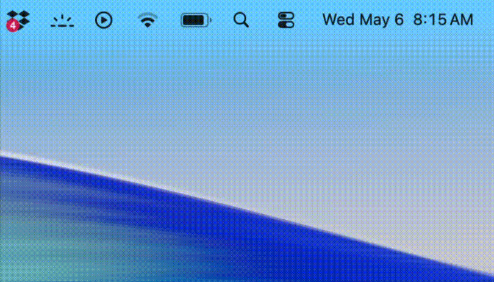

ProjectNudge is a minimal macOS CLI tool that provides the gentle pressure you need to keep pushing those commits - and finally ship.
npm install -g project-nudge && nudge start

ProjectNudge reminds you which repos haven't been updated in a while.